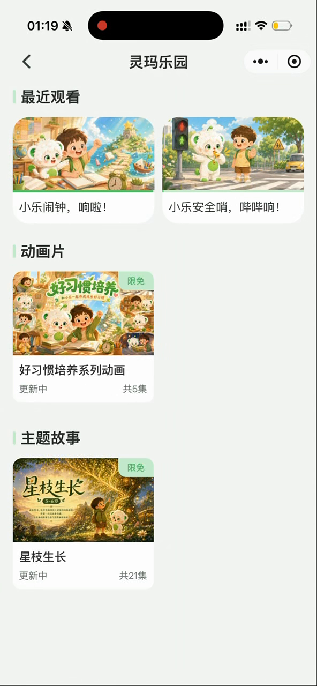

内容，是行动的起点。
AI 玩偶 × 小程序
开学季成长包
从一次观看，
走向一次家庭参与。
用户的声音
“我更需要的是你给我出一个解决方案，我应该怎么做？”老用户访谈 · 23:34
产品判断
让家长更容易开始。
动画结束后承接任务模板，家长确认计划，玩偶负责提醒。减少从空白开始构思的负担。
研究至方案定稿阶段
AI 玩偶 × 小程序
从一次观看，
走向一次家庭参与。
用户的声音
“我更需要的是你给我出一个解决方案，我应该怎么做？”老用户访谈 · 23:34
产品判断
动画结束后承接任务模板，家长确认计划，玩偶负责提醒。减少从空白开始构思的负担。
研究至方案定稿阶段我习惯把事情问清楚，
也珍惜那些说不清的感受。